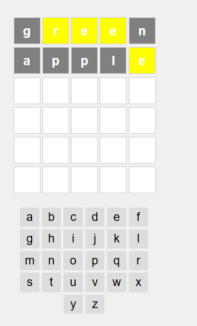

Wordle
In the game Wordle, players must guess a secret 5-letter word in 6 or fewer attempts. After each guess, clues are given to the player.
- If a letter is in the word and in the correct location, the block will be highlighted green.
- If a letter is in the word but in the wrong location, the block will be highlighted yellow.
Wordle Visuals
MediME Project
In this project, one must implement a Healthcare Appointment Management System (HAMS) for a telehealth clinic. HAMS is a mobile application designed to streamline the process of healthcare appointment scheduling and management.
- The app should support three types of users: Patient, Doctor, and Administrator.
- Features include logging in, signing up, logging off, and secure data storage authenticated online using Firebase's Realtime Database.
Database Specifications
The app should be able to store data on a Firebase database.
Login Page
The app should have a specific login screen, with an appearance similar to the one below: